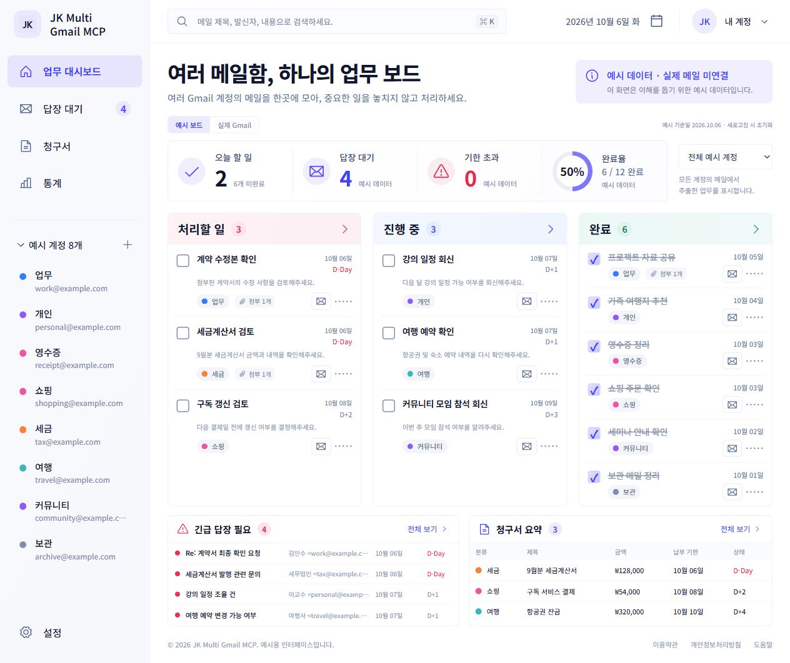
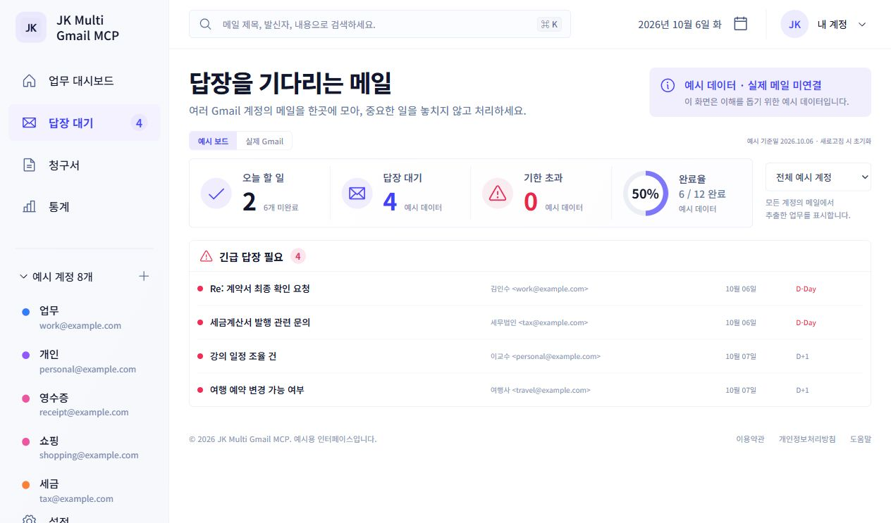
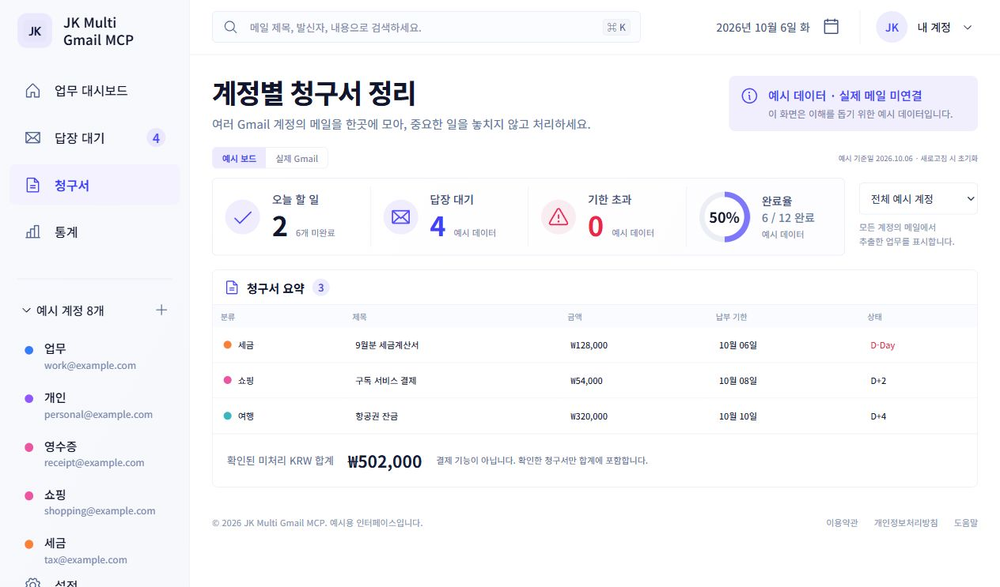
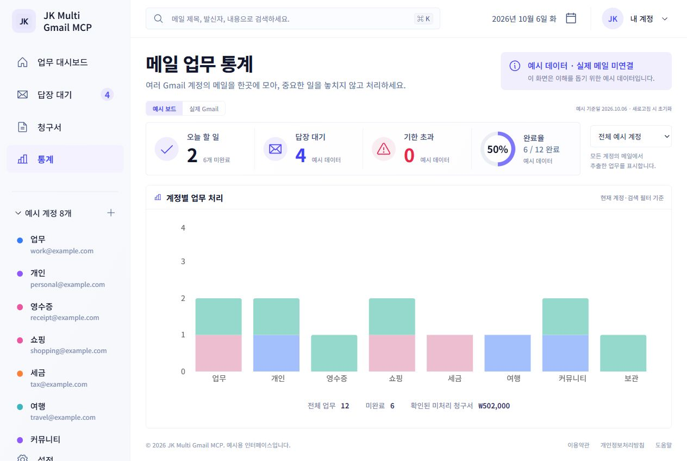

Authorize your
own Google account.
Use the installed work board to connect your account through Google. The work board requests Gmail read-only access.
A local Windows work board for the tasks, replies and invoice candidates in your Gmail accounts.




Mailtodo surfaces work from recent mail. You review each candidate against the original message and decide what happens next.
Requests and follow-ups, grouped by account and status. Record your progress on the local board.
Find messages asking for a response. Review the subject, sender and due date; the board does not send your reply.
Keep candidate amounts and deadlines in view. Unclear values need your review. Tracking an invoice does not make a payment.
A quick look at the local work board, with example accounts and messages.
Product overview · example data
A simple workflow on your Windows PC.
Use the installed work board to connect your account through Google. The work board requests Gmail read-only access.
Choose when to fetch messages. Collection covers the last 30 days, with up to 25 inbox messages per account.
Check the original mail, confirm dates and amounts, and record task or invoice progress locally. The board does not change Gmail.
Scroll to explore the steps, or choose one above.
Mailtodo is the work board in JK Multi Gmail MCP. The work board and the MCP connector use separate data paths and permissions.
Review extracted candidates against the original mail. Invoice tracking does not make payments.
Read the privacy policyThis is the public information site. The work board and MCP run on your computer. Visiting this page does not grant Gmail access, and this site contains no personal mail data.
It is a personal tool for the operator's own Gmail accounts. The homepage explains the application and its data use; it does not offer public account registration.
Manage the application's access in your Google account connections. See the privacy policy for the local storage and deletion process.